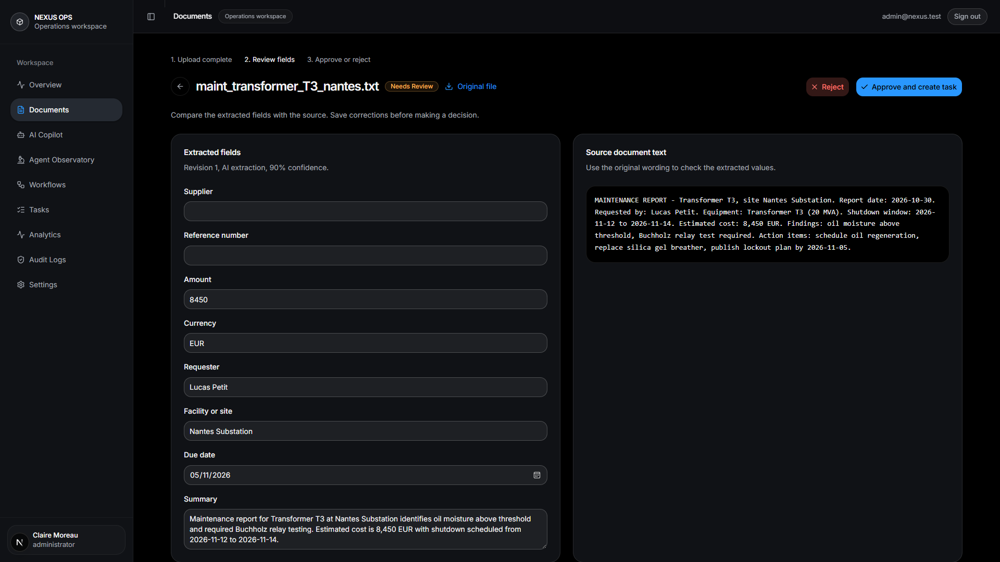
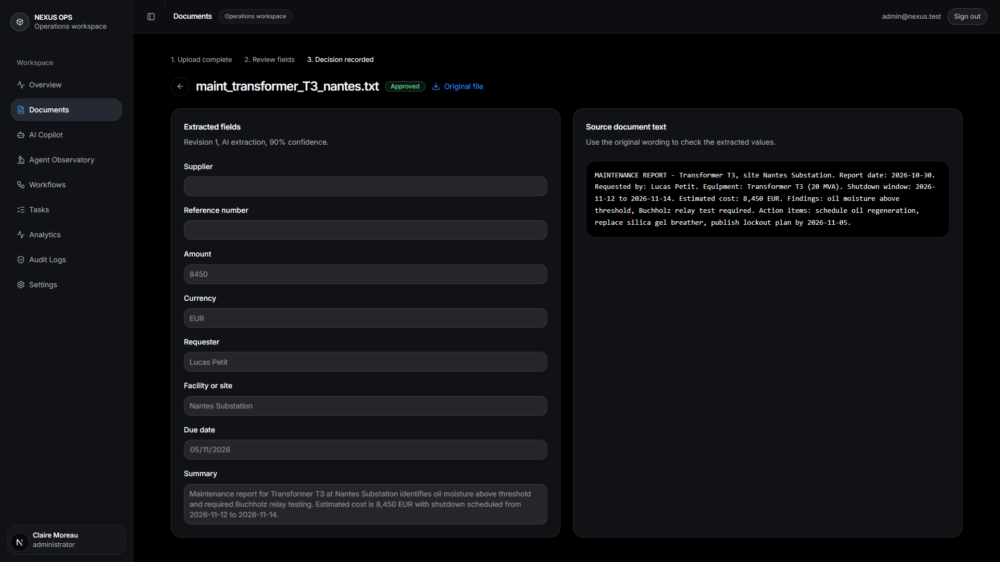

<template>
  <style>
    #root { position: absolute; inset: 0; background: #050505; }
    .frame { position: absolute; inset: 0; overflow: hidden; }
    .frame img {
      width: 1920px; height: 1080px;
      object-fit: cover; object-position: left top;
      transform-origin: 0 0; position: absolute; left: 0; top: 0;
    }
    #s2-stop {
      position: absolute; left: 60px; bottom: 60px;
    }
    .chip {
      background: rgba(8, 12, 18, 0.94);
      border: 1px solid #2a3441;
      border-left: 4px solid #f59e0b;
      color: #ffffff;
      padding: 20px 30px;
      font-size: 36px; font-weight: 800;
    }
    .chip small { display: block; color: #8b98a9; font-size: 28px; font-weight: 600; margin-top: 6px; }
    #s2-ring {
      /* sits on the approval button as it appears inside the 2.6x crop */
      position: absolute; left: 1476px; top: 400px; width: 580px; height: 120px;
      pointer-events: none;
      transform: translate(-50%, -50%);
      border-radius: 22px;
      border: 3px solid rgba(59, 130, 246, 0.9);
    }
    #s2-ok {
      position: absolute; right: 60px; top: 60px;
      display: flex; flex-direction: column; gap: 14px; align-items: flex-end;
    }
    .okchip {
      background: rgba(9, 20, 14, 0.94);
      border: 1px solid #1e4633;
      border-right: 4px solid #22c55e;
      color: #ffffff;
      padding: 20px 30px;
      font-size: 36px; font-weight: 800; text-align: right;
    }
    .okchip small { display: block; color: #86efac; font-size: 28px; font-weight: 600; margin-top: 6px; }
    #s2-stop {
      position: absolute; left: 60px; bottom: 60px;
    }
  </style>
  <div data-hf-id="hf-32if" id="root" data-composition-id="scene2">
    <!-- A: gate — 2.6x crop on the live Reject / Approve-and-create-task buttons -->
    <div data-hf-id="hf-mfxc" class="clip" id="s2-a" data-start="0" data-duration="2.38" data-track-index="0">
      <div data-hf-id="hf-gbvm" class="frame" id="s2-gate">
        
        <div data-hf-id="hf-p18h" id="s2-ring"></div>
      </div>
      <div data-hf-id="hf-24t3" id="s2-stop">
        <div data-hf-id="hf-0bfz" class="chip">Then it stops. For you.<small data-hf-id="hf-iq4d">the approval gate</small></div>
      </div>
    </div>
    <!-- B: decision — the approved record, fields locked -->
    <div data-hf-id="hf-s7gi" class="clip" data-start="2.38" data-duration="2.27" data-track-index="0" id="s2-b">
      <div data-hf-id="hf-d9wv" class="frame">
        
      </div>
      <div data-hf-id="hf-b4h9" id="s2-ok">
        <div data-hf-id="hf-ygt7" class="okchip">Approved · Task created<small data-hf-id="hf-5zje">decision recorded</small></div>
      </div>
    </div>
  </div>
  <script>
    const tl = gsap.timeline({ paused: true });
    // crop: approval buttons pinned to the frame's right; image always covers the full canvas
    tl.set("#s2-shot-a", { x: -3072, y: -32, scale: 2.6, transformOrigin: "0 0" }, 0);
    tl.fromTo("#root", { opacity: 0 }, { opacity: 1, duration: 0.22, ease: "power1.out" }, 0);
    tl.fromTo("#s2-stop", { opacity: 0, y: 26 }, { opacity: 1, y: 0, duration: 0.35, ease: "power2.out" }, 0.12);
    // slow push-in on the buttons during the hold (right edge stays pinned)
    tl.to("#s2-shot-a", { scale: 2.66, x: -3187, y: -32, duration: 2.3, ease: "sine.inOut", transformOrigin: "0 0" }, 0);
    // highlight ring breathes over the approve button until the click
    tl.fromTo("#s2-ring", { opacity: 0, boxShadow: "0 0 26px rgba(59,130,246,0)" },
      { opacity: 1, boxShadow: "0 0 26px rgba(59,130,246,0.65)", duration: 0.4, ease: "power1.out" }, 0.6);
    tl.to("#s2-ring", { boxShadow: "0 0 8px rgba(59,130,246,0.35)", duration: 0.5, ease: "sine.inOut" }, 1.0);
    tl.to("#s2-ring", { boxShadow: "0 0 30px rgba(59,130,246,0.8)", duration: 0.3, ease: "sine.in" }, 1.5);
    // click at +1.91 (abs 8.73): flash, then the ring collapses
    tl.to("#s2-ring", { opacity: 0, duration: 0.2 }, 1.92);
    tl.to("#s2-gate", { opacity: 0.65, duration: 0.12 }, 1.92);
    tl.to("#s2-gate", { opacity: 1, duration: 0.1 }, 2.04);
    // hard cut to approved state at +2.38 (abs 9.20)
    tl.set("#s2-shot-b", { scale: 1.06, transformOrigin: "0 0" }, 0);
    tl.to("#s2-b", { opacity: 1, duration: 0.001 }, 0);
    tl.fromTo("#s2-ok", { opacity: 0, y: 26 }, { opacity: 1, y: 0, duration: 0.35, ease: "power2.out" }, 2.5);
    tl.to("#s2-shot-b", { scale: 1.0, duration: 2.15, ease: "power1.out", transformOrigin: "0 0" }, 2.38);
    window.__timelines["scene2"] = tl;
  </script>
</template>
